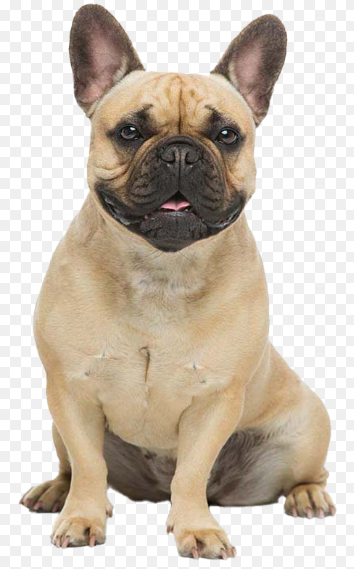
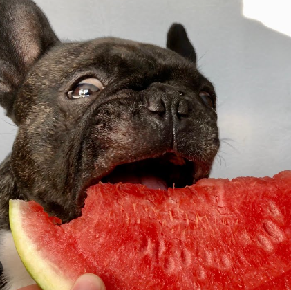

About me
mark The French Bulldog (French: Bouledogue Français) is a French breed of companion dog or toy dog.
It appeared in Paris in the mid-nineteenth century, apparently the result of cross-breeding of Toy Bulldogs
imported from England and local Parisian ratters.[3] It is commonly kept as a pet and is among the most frequently registered dogs in a number of countries including Australia,
the United Kingdom, and the United States. The breed is susceptible to various health problems as a consequence of being bred for a distinctive appearance, sporting a brachycephalic face and skin wrinkles.

Hobby


Dream